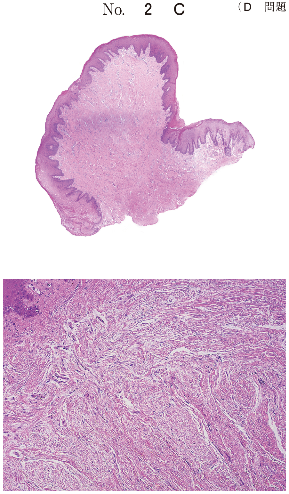
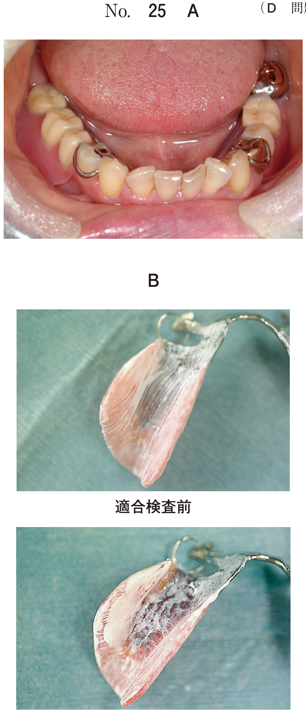
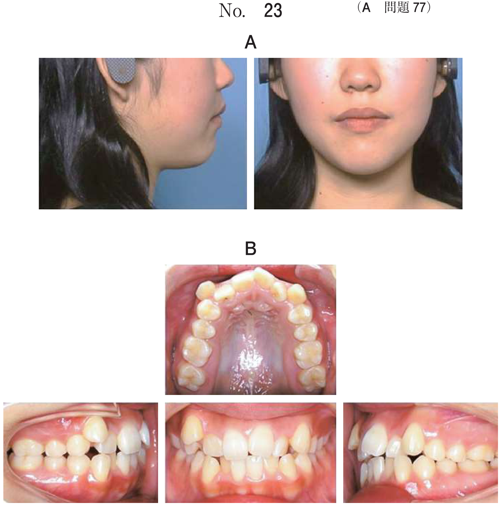

局所修飾因子
1. 局所修飾因子とは
局所修飾因子とは、歯周病の発症・進行に関係する口腔内の因子のこと。
- 炎症因子：プラークリテンションファクター（プラーク蓄積因子）
- 外傷性因子：外傷性咬合
2. プラークリテンションファクター
プラークの蓄積を促進する因子。炎症因子として歯周病の発症・進行に関与する。
| 因子 | 特徴・機序 |
|---|---|
| 歯石 | プラークが石灰化したもの。歯石自体に病原性はないが、プラークが付着しやすくなる |
| 食片圧入 | 食物が歯間部に強く押し込まれる状態。接触点不良、辺縁隆線の不揃い、プランジャーカスプなどが原因 |
| 口呼吸 | 口腔内粘膜が乾燥し自浄作用が低下。上顎口蓋側に堤状隆起と呼ばれる腫脹が見られる |
| 不適合修復・補綴物 | カントゥア（歯冠豊隆形態）やマージンの形態不良により、食物残渣の滞留や食片圧入を引き起こす |
| 歯列不正 | 叢生、捻転、転位などによりプラークコントロールが困難となる |
| 口腔内の形態異常 | エナメル突起、根面溝、口蓋裂溝、小帯の付着位置異常、口腔前庭狭小など |
歯石の分類
| 種類 | 位置 | 特徴 |
|---|---|---|
| 歯肉縁上歯石 | 歯肉辺縁より歯冠側 | 黄白色、比較的軟らかい |
| 歯肉縁下歯石 | 歯肉辺縁より根尖側 | 暗褐色〜黒色、硬い、歯面に強固に付着 |
3. 外傷性修飾因子
外傷性咬合と咬合性外傷
外傷性咬合とは、歯周組織に障害を引き起こす咬合のこと。外傷性咬合の結果起きる病変を咬合性外傷と呼ぶ。
- ブラキシズム（歯ぎしり、くいしばり）
- 早期接触
- 舌や口唇の悪習癖
- 職業の習慣
4. 歯肉退縮の原因
- 不適切なブラッシング（過度のブラッシング圧）
- 外傷性咬合
- 小帯の付着位置異常
- 口腔前庭狭小
- 歯列不正
注意：歯肉炎は歯肉退縮の直接的原因ではない
40歳の女性。下顎右側側切歯と犬歯の歯肉退縮を主訴として来院した。これまでに夜間の歯ぎしりを指摘されたことがあったが、矯正治療や歯周治療を受けたことはなかったという。初診時の口腔内写真（別冊No.7A）とエックス線写真（別冊No.7B）を別に示す。歯周組織検査結果の一部を表に示す。
歯肉退縮の原因として考えられるのはどれか。2つ選べ。


b 外傷性咬合
c 口腔前庭狭小
d 小帯の付着位置異常
e 不適切な歯ブラシの使用
【解説】歯肉退縮の原因は、不適切なブラッシング、外傷性咬合、小帯付着異常など。歯肉炎は腫脹を起こすが退縮の原因ではない。
48歳の女性。上顎両側側切歯の冷水痛を主訴として来院した。2年前から自覚していたが放置していたという。現在、高血圧症の治療を受けている。初診時の口腔内写真（別冊No.31A）とエックス線写真（別冊No.31B）を別に示す。歯周組織検査結果の一部を表に示す。
考えられる原因はどれか。2つ選べ。


b 歯周炎
c 降圧薬の服用
d 小帯の位置異常
e 不適切なブラッシング
【解説】歯周炎による付着の喪失と不適切なブラッシングが歯肉退縮の原因。口呼吸は堤状隆起の原因であり退縮ではない。
40歳の女性。噛み合わせると上顎左側中切歯が動くことを主訴として来院した。1年前から食事中に違和感があったがそのままにしていたという。検査の結果、慢性歯周炎と診断した。初診時の口腔内写真（別冊No.32A）とエックス線画像（別冊No.32B）を別に示す。歯周組織検査結果の一部を表に示す。
└1の病態の主な修飾因子はどれか。2つ選べ。


b プラーク
c 外傷性咬合
d セメント質の肥厚
e 小帯の付着位置異常
【解説】歯内-歯周病変では根尖病変と外傷性咬合が修飾因子となる。